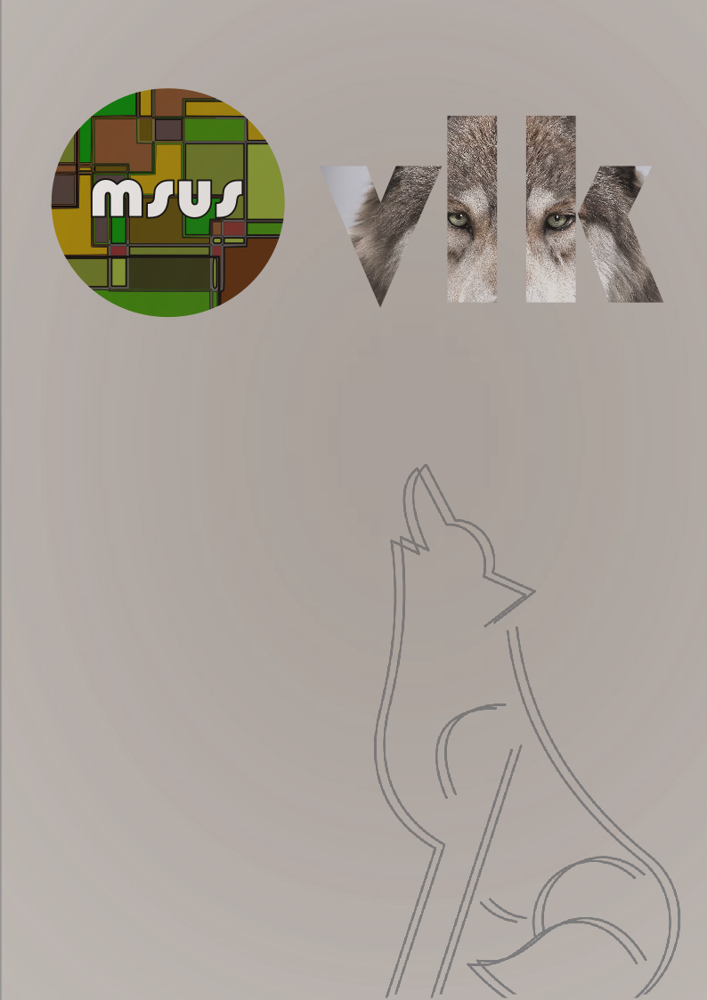

Vektorske grafike - Inkscape
Pomisao na logo dao mi je ideju prožeti svoje specifično prezime kroz dizajn.
Svaku komponentu stavila sam u novi sloj.
Podloga
Prvo sam napravila pravokutnik koristeći Alat za crtanje pravokutnika koji se nalazi na lijevoj strani zaslona. Pravokutnik služi kao podloga u smeđe sivoj boji.
Tekst
Da bih dodala tekst, u lijevom dijelu zaslona, pritisnula sam ikonicu slova A koja označava tekst. Riječ VLK napisala sam u fontu Bauhaus. Kopirala sam i zalijepila sliku vuka koju sam pronašla na internetu. Označila sam i tekst i sliku i u kartici Objekt pritisnula Maska, a zatim Postavi masku. Tako sam dobila da slika poprimi oblik teksta.
MSUS logo
U gornjem desnom kutu, kao naznaka da je dizajn u sklopu kolegija Multimedijalni sustavi, htjela sam suptilno ubaciti akronim koji ujedno može predstavljati i imaginarni mjesec na koji vuk zavija. Alatom za crtanje pravokutnika, nacrtala sam nekolicinu pravokutnika koje sam naknadno obojila u neutralnijim nijansama smeđe, zelene i narančaste. Alatom za crtanje elipsa nacrtala sam krug koji sam postavila preko pravokutnika, sve ih označila i postavila isječak koji je uklonio sve dijelove koji su se nalazili izvan naznačenog kruga. Opet sam dodala tekst u fontu Bauhaus i obojila ga u narančasto.
Detalj
Kopirala sam .png sliku obrisa vuka, koji reprezentira moje prezime na izvornom češkom jeziku. Njega sam duplicirala koristeći tipke Ctrl+D.
Preko svega sam napravila pravokutnik koji sam u Ispuna i linija naznačila da je 80% zamućen i 40% neproziran kako bi dobila efekt magle.
Izvoz
Kako bi datoteku pohranila kao .png datoteku bez gubitka kvalitete, na traci sam izabrala Datoteka, a zatim Izvezi te odabrala željeni .png format.

Fakultet informatike u Puli
Nikolina Vlk
E: nvlk@unipu.hr
A: Ul. Alda Negrija
652100, Pula